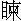

玉樹歌殘舞袖斜，景陽宮裡劍如麻。
曙星自合臨天下，千里空教怨麗華。
這首詩單表隋文帝篡周滅陳，奄有天下，一統太平，真個治得外戶不閉，路不拾遺。初時已立太子勇為東宮，卻因不得母后獨孤氏歡心。原來，那個獨孤皇后最是妒忌，文帝畏而愛之。常言：「前代帝王，骨肉分爭，皆因嫡庶相猜相忌，致有禍胎。今吾家五子同母，傍無異生之子，後來安享太平，絕無後患。」
不想太子勇嫡妃元氏無寵，抑鬱而死，專寵雲定興之女。所生子女，皆是庶出。獨孤皇后心中甚是不憤，每每在文帝前譖訴太子勇之短。文帝極是懼內的，聽他言話，太子勇日漸日疏。
卻有第二子晉王廣，為揚州都總管，生來聰明俊雅，儀容秀麗。十歲即好觀古今書傳，至於方藥、天文地理、百家技藝、術數，無不通曉。卻只是心懷叵測，陰賊刻深，好鉤索人情深淺，又能為矯情忍訽之事。刺探得太子勇失愛母后，日夜思所以間之。日與蕭妃獨處，後宮皆不得御幸。每遇文帝及獨孤皇后使來，必與蕭妃迎門候接，飲食款待，如平交往來。臨去，又以金錢納諸袖中。以故人人到母后跟前，交口同聲，譽稱晉王仁孝聰明，不似太子寡恩傲禮，專寵阿雲，致有如許豚犢。獨孤皇后大以為然，日夜譖之於文帝，說太子勇不堪承嗣大統。
後來晉王廣又多以金寶珠玉，結交越公楊素，令他讒廢太子。楊素是文帝第一個有功之臣，言無不從。皇后譖之於內，楊素毀之於外。文帝積怒太子勇，已非一日。
遂廢太子勇為庶人，幽之別宮，卻立晉王廣為太子。受命之日，地皆震動。識者皆知其奪嫡陰謀。獨楊素殘忍深刻，揚揚得意，以為：「太子由我得立。」威權震天下，百官皆畏而避之。
後來獨孤皇后崩，後宮卻得近幸。文帝有一位宣華夫人陳氏，陳宣帝之女也。隋滅陳，配掖庭。性聰慧，姿貌無雙。及皇后崩後，始進位為貴人。專房擅寵，後宮莫及。
文帝寢疾於仁壽宮，夫人與太子廣同侍疾。平旦，夫人出更衣，為太子所逼。夫人拒之，髮亂神驚，歸於帝所。文帝怪其容色有異，問其故，夫人泫然泣曰：「太子無禮。」文帝大恚曰：「畜生何足付大事！獨孤誤我！」蓋指皇后也。因呼兵部尚書柳述、黃門侍郎元巖、司空越公楊素等，曰：「召我兒來。」述等將呼太子廣，帝曰：「勇也。」楊素曰：「國本不可屢遷，臣不敢奉詔。」帝氣哽塞，回面向內不言。
素出語太子廣曰：「事急矣。」太子廣拜素曰：「以終身累公。」
有頃，左右報素曰：「帝呼不應，喉中呦呦有聲。」素急入，文帝已崩矣。陳夫人與諸後宮相顧悲慟。
晡時，太子廣遣使者齎金合，緘封其際，親書封字以賜夫人。夫人見之惶懼，以為藥酒，不敢發。使者促之，乃開，見盒中有同心結數枚。宮人咸相慶曰：「得免死矣。」陳夫人恚而卻坐，不肯致謝。宮人咸逼之，乃拜使者。太子夜入烝焉。
明旦發喪，使人殺故太子勇而後即位。左右扶太子上殿。太子足弱，欲倒者數四，不能上。楊素叱去左右，以手扶接，太子援之乃上。百官莫不嗟嘆。楊素歸謂家人曰：「小兒子吾已提起教作大家郎，不知能了當否？」
素恃己有功，於帝多呼為郎君。時宴內宮，宮人偶遺酒污素衣。素叱左右引下加撻焉。帝甚不平，隱忍不發。
一日，帝與素釣魚於後苑池上，並坐，左右張傘以遮日。帝起如廁，回見素坐赭傘下，風骨秀異，神彩毅然。帝大忌之。帝每欲有所為，素輒抑而禁之，由是愈不快於素。會素死，帝曰：「使素不死，夷其九族。」
先是，素一日欲入朝，見文帝執金鉞逐之，曰：「此賊，吾欲立勇，竟不從吾言。今必殺汝。」素驚怖入室，召子弟二人語曰：「吾必死矣！出見文帝如此如此。」移時而死。
帝自素死，益無忌憚，沉迷女色。一日，顧詔近侍曰：「人主享天下之富，亦欲極當年之樂，自快其意。今天下富安，外內無事，正吾行樂之日也。今宮殿雖壯麗顯敞，苦無曲房小室，幽軒短檻。若得此，則吾期老於其中也。」近侍高昌奏曰：「臣有友項昇，浙人也。自言能構宮室。」
翌日，詔召問之。昇曰：「臣乞先進圖本。」後日進圖，帝覽之，大悅。即日詔有司供具材木，凡役夫數萬，經歲而成。樓閣高下，軒窗掩映，幽房曲室，玉欄朱楯，互相連屬，回環四合，牖戶自通，千門萬戶，金碧相輝，照耀人耳目。金虯伏於棟下，玉獸蹲於戶傍；壁砌生光，瑣窗曜日，工巧之極，自古未之有比也。費用金寶珠玉，庫藏為之一空。人誤入其中者，雖終日不能出。
帝幸之，大悅，顧左右曰：「使真仙遊其中，亦當自迷也，可目之曰迷樓。」詔以五品官賜昇，仍給內庫金帛千匹賞之。詔選良家女數千以居樓中。帝每一幸，經月不出。
是月，大夫何稠進御女車。車之制度絕小，只容一人，有機伏於其中。若御童女，則以機礙女之手足，女纖毫不能動。
帝以處女試之，極喜，召何稠謂之曰：「卿之巧思，一何神妙如此。」以千金贈之。
稠又進轉關車，可以升樓閣，如行平地。車中御女，則自搖動。帝尤喜悅，謂稠曰：「此車何名？」稠曰：「臣任意造成，未有名也，願賜佳名。」帝曰：「卿任其巧意以成車，朕得之，任其意以自樂，可命名任意車也。」帝又令畫工繪畫士女交合之圖數十幅，懸於閣中。其年，上官時自江外得替回，鑄烏銅鑒數十面，其高五尺，而闊三尺，磨以成鏡為屏，環於寢所，詣闕投進。帝以屏納迷樓中，而御女於其傍，纖毫運轉，皆入於鑒中。帝大喜曰：「繪畫得其形像耳，此得人之真容也，勝繪圖萬倍矣。」
帝日夕沉荒於迷樓，罄竭其力，亦多倦息。又辟地周二百里為西苑，役民力常百萬，內為十六院。聚巧石為山，鑿池為五湖四海，詔天下境內所有鳥獸草木，驛送京師。詔定西苑十六院名：
景明、迎暉、棲鸞、晨光、明霞、翠華、文安、積珍、影紋、儀鳳、仁智、清修、寶林、和明、綺陰、絳陽。
每院擇宮中佳麗謹厚有容色美人實之，選帝常幸御者為之首。分派宦者，主出入易市。又鑿五湖，每湖四方十里，東曰翠光湖、南曰迎陽湖、西曰金光湖、北曰潔水湖、中曰廣明湖。湖中積土石為山，構亭殿，屈曲環繞澄泓，皆窮極人間華麗。又鑿北海，周環四十里，中有三山，效蓬萊、方丈、瀛洲，其上皆臺榭迴廊，其下水深數丈。開通五湖北海，通行龍鳳舸。帝多泛東湖，因製湖上曲《望江南》八闋云：
湖上月，偏照列仙家。水浸寒光鋪枕簟，浪搖晴影走金蛇。偏稱泛靈槎。 光景好，輕彩望中斜。清露冷侵銀兔影，西風吹落桂枝花。開宴思無涯。
其二云：
湖上柳，煙裡不勝催。宿霧洗開明媚眼，東風搖弄好腰肢。煙雨更相宜。 環曲岸，陰覆畫橋低。線拂行人春晚後，絮飛晴雪暖風時。幽意更依依。
其三云：
湖上雪，風急墮還多。輕片有時敲竹戶，素華無韻入澄波。望外玉相磨。 湖水遠，天地色相和。仰面莫思梁苑賦，朝來且聽玉人歌。不醉擬如何？
其四云：
湖上草，碧翠浪通津。修帶不為歌舞緩，濃鋪堪作醉人茵。無意襯香衾。 晴霽後，顏色一般新。遊子不歸生滿地，佳人遠意正青春。留詠卒難伸。
其五云：
湖上花，天水浸靈芽。淺蕊水邊勻玉粉，濃苞天外剪明霞。日在列仙家。 開爛熳，插鬢若相遮，水殿春寒幽冷艷，玉軒晴照暖添華。清賞思何賒。
其六云：
湖上女，精選正輕盈。猶恨乍離金殿侶，相將盡是採蓮人。清唱謾頻頻。 軒內好，嬉戲下龍津。玉管朱弦聞盡夜，踏青鬥草事青春。玉輦從群真。
其七云：
湖上酒，終日助清歡。檀板輕聲銀甲緩，醅浮香米玉蛆寒。醉眼暗相看。 春殿晚，仙艷奉杯盤。湖上風光真可愛，醉鄉天地就中寬。帝主正清安。
其八云：
湖上水，流繞禁園中。斜日暖搖清翠動，落花香暖眾紋紅。蘋末起清風。 閒縱目，魚躍小蓮東。汎汎輕搖蘭棹穩，沉沉寒影上仙宮。遠意更重重。
帝常遊湖上，多令宮中美人歌唱此曲。
大業六年，後苑草木鳥獸繁息茂盛：桃蹊柳徑，翠陰交合；金猿青鹿，動輒成群。自大內開為御道，直通西苑，夾道植長松高柳。帝多宿苑中，去來無時。侍御多夾道而宿，帝往往於中夜即幸焉。
道州貢矮民王義，眉目濃秀，應對敏捷，帝尤愛之。常從帝遊，終不得入宮。曰：「爾非宮中物也。」義乃出，自宮以求進。帝由是愈加憐愛，得出入內寢。義多臥御榻下。帝遊湖海回，多宿十六院。
一夕，中夜，帝潛入棲鸞院。時夏氣暄煩，院妃慶兒臥於簾下。初月照軒，甚是明朗。慶兒睡中驚魘，若不救者。帝使義呼慶兒。帝自扶起，久方清醒。帝曰：「汝夢中何故而如此？」慶兒曰：「妾夢中如常時，帝握妾臂，遊十六院。至第十院，帝入坐殿上。俄時火發，妾乃奔走，回視帝坐烈焰中，驚呼人救帝，久方睡覺。」帝自強解曰：「夢死得生，火有威烈之勢。吾居其中，得威者也。」後帝幸江都被弒。帝入第十院，居火中，此其應也。
一夕，帝因觀殿壁上有廣陵圖，帝注目視之，移時，不能舉步。時蕭后在側，謂帝曰：「知他是甚圖畫？何消帝如此掛心？」帝曰：「朕不愛此畫，只為思舊遊之處耳。」於是以左手憑后肩，右手指圖上山水及人煙村落寺宇，歷歷皆如在目前，謂蕭后曰：「朕昔征陳後主時遊此，豈期久有天下，萬機在躬，便不得豁然於懷抱也。」言訖，容色慘然。蕭后奏曰：「帝意在廣陵，何如一幸？」帝聞之，言下恍然。
即日召群臣，言欲至廣陵，旦夕遊賞。議當泛巨舟，自洛入河，自河達海入淮，至廣陵。群臣皆言：「似此程途，不啻萬里，又孟津水緊，滄海波深，若泛巨舟，事恐不測。」
時有諫議大夫蕭懷靜，乃皇后弟也，奏曰：「臣聞秦始皇時，金陵有王氣，始皇使人鑿斷砥柱，王氣遂絕。今睢陽有王氣，又陛下喜在東南，欲泛孟津，又慮危險。況大梁西北有故河道，乃是秦將王賁畎水灌大梁之處。乞陛下廣集兵夫，於大梁起首開掘，西自河陰，引孟津水入，東至淮陰，放孟津水出。此間地不過千里，況於睢陽境內經過。一則路達廣陵，二則鑿穿王氣。」
帝聞奏，大喜。出敕朝堂，有敢諫開河者斬。乃命征北大總管麻叔謀為開河都護，以蕩寇將軍李淵為開河副使。淵稱疾不赴，即以左屯衛將軍令狐達代之。詔發天下丁夫，男年十五以上，五十以下俱要至。如有隱匿者，斬三族。凡役夫五百四十三萬餘人，晝夜開掘，急如星火。又詔江淮諸州，造大船五百隻，使命促督。民間有配著造船一隻者，家產破用皆盡，猶有不足，枷項笞背，然後鬻賣子女以供官費。
到得開河功役漸次將成，龍舟亦就。帝大喜，將幸江都，命越王侗留守東都。宮女半不隨駕，爭攀號留。且言遼東小國，不足以煩大駕，願遣將征之。帝意不回。作詩留別宮人云：
我夢江都好，征遼亦偶然。
但存顏色在，離別只今年。
車駕既行，師徒百萬。離都旬日，長安貢御車女袁寶兒，年十五，腰肢纖墮，騃憨多態。帝寵愛特厚。時洛陽進合蒂迎輦花，云：「得之嵩山塢中，人不知其名，採花者異而貢之。」會帝駕適至，因以「迎輦」名之。帝令寶兒持之，號曰「司花女」。
時詔虞世南草《征遼指揮德音敕》，寶兒持花侍側，注視久之。帝謂世南曰：「昔傳飛燕可掌上舞，朕常謂儒生飾於文字，豈人能若是乎？及今得寶兒，方昭前事。然多憨態，今注目於卿。卿才人，可便作詩嘲之。」世南應詔，為絕句云：
學畫鶯黃半未成，垂肩嚲袖太憨生。
緣憨卻得君王寵，長把花枝傍輦行。
帝大悅。既至汴京，帝御龍舟，蕭后乘鳳舸。於是吳越取民間女年十五六歲者五百人，謂之殿腳女，至龍舟鳳舸。每船用綵纜十條，每條用殿腳女十人，嫩羊十口，令殿腳女與羊相間而行。時方盛暑，翰林學士虞世基獻計，請用垂柳栽於汴渠兩堤上。一則樹根四散，鞠護河堤，二則牽舟之人庇其陰，三則牽舟之羊食其葉。上大喜，詔民間獻柳一株，賞一匹絹。百姓競獻之。
又令親種。帝自種一株，群臣次第皆種，方及百姓。時有謠言曰：「天子先栽，然後百姓栽。」栽與災同音，蓋妖讖也。栽畢，取御筆寫賜垂柳姓楊，曰楊柳也。時舳艫相繼，連接千里，自大梁至淮口，聯綿不絕。錦帆過處，香聞數里。
一日，帝將登龍舟，憑殿腳女吳絳仙肩，喜其媚麗，不與群輩等，愛之，久不移步。絳仙善畫長蛾眉，帝色不自禁。回輦，召絳仙，將拜婕妤。蕭后性妒忌，故不克諧。帝寢興罷，擢為龍舟首楫，號曰「崆峒夫人」。由是殿腳女爭效為長蛾眉。司宮吏日給螺子黛五斛，號為蛾綠。螺子黛出波斯國，每顆值十金。後徵賦不足，雜以銅黛給之。獨絳仙得賜螺黛不絕。帝每倚簾視絳仙，移時不去，顧內謁者曰：「古人言秀色若可餐，如絳仙真可療飢矣。」因吟《持楫篇》賜之曰：
舊曲歌桃葉，新妝艷落梅。
將身傍輕楫，知是渡江來。
詔殿腳女千輩唱之。時越溪進耀光綾，綾紋突起，有光彩。帝獨賜司花女及絳仙，他人莫預。蕭后恚憤不懌。由是二姬稍稍不得親幸，帝常登樓憶之，題東南柱二篇云：
黯黯愁侵骨，綿綿病欲成。
須知潘岳鬢，大半為多情。
又云：
不信長相憶，絲從鬢裡生。
閒來倚檻立，相望幾含情。
殿腳女自至廣陵，悉命備月觀行宮，絳仙輩亦不得親侍寢殿。有郎將自瓜州宣事回，進合歡果一器。帝命小黃門以一雙馳騎賜絳仙。遇馬上搖動，合歡蒂解，絳仙拜賜，因附紅箋小簡上進曰：
驛騎傳雙果，君王寵念深。
寧知辭帝里，無復合歡心。
帝覽之，不悅，顧小黃門曰：「絳仙如何辭怨之深也？」黃門拜而言曰：「適走馬搖動，及月觀，果已離解，不復連理。」
帝因言曰：「繹仙不獨容貌可觀，詩意深切，乃女相如也。亦何謝左貴嬪乎？」
帝嘗醉遊後宮，偶見宮婢羅羅者，悅而私之。羅羅畏蕭后，不敢迎帝，因托辭以程姬之疾，不可薦寢。帝乃嘲之曰：
個人無賴是橫波，黛染隆顱簇小峨。
幸好留儂伴成夢，不留儂住意如何？
帝自達廣陵，沉湎滋深，荒淫無度，往往為妖崇所惑。嘗遊吳公宅雞臺，恍惚間與陳後主相遇。帝幼年與後主甚善，乃起迎之，都忘其已死。後主尚喚帝為殿下。後主戴青紗皂幘，青綽袖，長裾，綠錦純緣紫紋方平履。舞女數十，羅侍左右。
中有一女殊色，帝屢目之。後主云：「殿下不識此人耶？即張麗華貴妃也。每憶桃葉山前乘戰艦與此妃北渡。爾時麗華最恨，方倚臨春閣，試東郭㕙紫毫筆，書小砑紅綃，作答江令『璧月』句未終，見韓擒虎躍青驄馬，擁萬甲騎，直來衝人，都不存去就之禮，以至有今日。」言罷，即以綠文測海酒蠡，酌紅梁新釀勸帝。帝飲之甚歡，因請麗華舞《玉樹後庭花》。麗華白後主，辭以拋擲歲久，自井中出來，腰肢粗巨，無復往時姿態。帝再三強之。乃徐起舞，終一曲。後主問帝：「蕭妃何如此人？」帝曰：「春蘭秋菊，各一時之秀也。」後主復誦詩十數篇。帝不記之，獨愛《小牕詩》及《寄侍兒碧玉詩》。《小牕詩》云：
午醉醒來晚，無人夢自驚。
夕陽如有意，偏傍小窗明。
《寄碧玉》云：
離別腸應斷，相思骨合銷。
愁魂若非散，憑仗一相招。
麗華拜求帝賜一章，帝辭以不能。麗華笑曰：「嘗聞『此處不留儂，會有留儂處。』安得言不能耶？」帝強為之，操筆立成，曰：
見面無多事，聞名爾許時。
坐來生百媚，實個好相知。
麗華捧詩，赧然不懌。後主問帝：「龍舟之遊，樂乎？始謂殿下致治在堯舜之上，今日仍此逸遊。大抵人生各圖快樂，向時何見罪之深耶？三十六封書，至今使人怏怏不悅。」帝忽悟其已死，叱之曰：「何今日尚呼我為殿下，復以往事相訊耶？」恍惚不見，帝兀然不自知，驚悸移時。
帝後御龍舟，中道，夜半，聞歌者甚悲，其辭曰：
我兄征遼東，餓死青山下。今我挽龍舟，又困隋堤道。
方今天下飢，路糧無些少。前去三千程，此身安可保。
寒骨枕荒沙，幽魂泣煙草。悲損門內妻，望斷吾家老。
安得義男兒，焚此無主屍，引其孤魂回，負其白骨歸。
帝聞其歌，遽遣人求其歌者，至曉不得其人。帝頗徬徨，通夕不寐。帝知世祚已去，意欲遂幸永嘉，群臣皆不願從。揚州朝百官，天下朝貢使無一人至者。有來者，在途遭兵奪其貢物。帝猶與群臣議，詔十三道起兵，誅不朝貢者。
帝深識玄象，常夜起觀天，乃召太史令袁充，問曰：「天象如何？」充伏地泣涕曰：「星文大惡，賊星逼帝座甚急，恐禍起旦夕！願陛下遽修德滅之。」帝不樂，乃起，入便殿，索酒自歌曰：
宮木陰濃燕子飛，興亡自古漫成悲。
他日迷樓更好景，宮中吐艷戀紅輝。
歌竟，不勝其悲。近侍奏：「無故而歌甚悲，臣皆不曉。」帝曰：「休問。他日自知也。」俯首不語，召矮民王義問曰：「汝知天下將亂乎？」義泣對曰：「臣遠方廢民，得蒙上貢，進入深宮，久承恩澤，又嘗自宮，以近陛下。天下大亂，固非今日，履霜堅冰，其漸久矣。臣料大禍，事在不救。」帝曰：「子何不早告我也？」義曰：「臣惟不言，言即死久矣。」帝乃泣下沾襟，曰：「子為我陳敗亂之理，朕貴知其故也。」
明日，義上書曰：
臣本出南楚卑薄之地，逢聖明出治之時，不愛此身，願從入貢。臣本侏儒，性尤蒙滯。出入左右，積有年歲。濃被聖私，皆逾素望。侍從乘輿，周旋臺閣。臣雖至鄙，酷好窮經。頗知善惡之本源，少識興亡之所以。還往民間，周知利害。深蒙顧問，方敢敷陳。自陛下嗣守元符，體臨大器，聖神獨斷，謀諫莫從。大興西苑，兩至遼東。龍舟逾萬艘，宮闕遍天下。兵甲常役百萬，士民窮乎山谷。征遼者百不存十，歿葬者十未有一。帑藏全虛，穀粟湧貴。乘輿竟往，行幸無時。兵人侍從，常守空宮。遂令四方失望，天下為墟。方今有家之村，存者可數；子弟死於兵役，老弱困於蓬蒿。兵屍如嶽，餓莩盈郊。狗彘厭人之肉，鳶魚食人之餘。臭聞千里，骨積高原。陰風無人之墟，鬼哭寒草之下。目斷平野，千里無煙。萬民剝落，不保朝昏。父遺幼子，妻號故夫。孤苦何多，飢荒尤甚。亂離方始，生死誰知。人主愛人，一何至此！陛下聖性毅然，孰敢上諫？或有鯁言，即令賜死。臣下相顧，箝結自全。龍逢復生，安敢議奏！左右近臣，阿諛順旨。迎合帝意，造作拒諫。皆出此途，乃逢富貴。陛下惡過，從何得聞？方今又敗遼師，再幸東土，社稷危於春雪，干戈遍於四方。生民已入塗炭，官吏猶未敢言。陛下自惟：若何為計？陛下欲興師，則兵吏不順；欲行幸，則將衛莫從。適當此時，何以自處？陛下雖欲發憤修德，特加愛民，聖慈雖切救時，天下不可復得。大勢已去，時不再來。巨廈之崩，一木不能支；洪河已決，掬壤不能救！臣本遠人，不知忌諱。事急至此，安敢不言。臣今不死，後必死兵。敢獻此書，延頸待盡。
帝省義奏，曰：「自古安有不亡之國，不死之主乎？」義曰：「陛下尚猶蔽飾己過！陛下常言：『吾當跨三皇，超五帝，下視商周，使萬世不可及。』今日之勢如何？能自復回都輦乎？」
帝再三加嘆。義曰：「臣昔不言，誠愛生也；今既具奏，願以死謝。天下方亂，陛下自愛。」
少選，左右報曰：「義自刎矣。」帝不勝悲傷，命厚葬焉。時值閣裴虔通、虎賁郎將司馬德戡、左右屯衛將軍字文化及，將謀作亂。因請放官奴，分直上下。帝可其奏，即下詔云：
寒暑迭用，所以成歲功也；日月代明，所以均勞逸也。故士子有遊息之談，農夫有休養之節。咨爾髦眾：服役甚勤，執勞無怠；埃垢溢於爪髮，蟣虱結於兜鍪。朕甚憫之。俾爾休番，從便嬉戲，無煩方朔滑稽之請，而從衛士遞上之文。朕於侍從之間，可謂恩矣，可依前件施行。
不數日，忽中夜聞外切切有聲。帝急起，衣冠御內殿。坐未久，左右伏兵俱起。司馬德戡攜白刃向帝。帝叱之曰：「吾終年重祿養汝，吾無負汝，汝何得負我！」帝常所幸朱貴兒在帝傍，謂德戡曰：「三日前，帝慮侍衛秋寒，詔宮人悉絮袍褲，帝自臨視。造數千領，兩日畢功。前日頒賜，爾等豈不知也？何敢迫脅乘輿！」乃大罵德戡。德戡斬之，血濺帝衣。
德戡前數帝罪，且曰：「臣實負陛下。但今天下俱叛，二京已為賊據。陛下歸亦無門，臣生亦無路。臣已虧臣節，雖欲復已，不可得也，願得陛下首以謝天下。」乃攜劍逼帝。
帝復叱曰：「汝豈不知諸侯之血入地，大旱三年，況天子乎？死自有法。」命索藥酒，不得。左右進練巾，逼帝入閣自經死。蕭后率左右宮娥，輟床頭小版為棺斂，粗備儀衛，葬於吳公臺下，即前此帝與陳後主相遇處也。
初，帝不愛第三子齊王

，見之常切齒。每行幸，輒錄以自隨。及是難作，謂蕭后曰：「得非阿孩耶？」阿孩，齊王小字也。司馬德戡等既弒帝，即馳遣騎兵執齊王於私第，裸跣驅至當街。曰：「大家計必殺兒，願容兒衣冠就死。」猶意帝遣人殺之。父子見殺，至死不明，可勝痛悼。
後唐文皇太宗皇帝，提兵入京，見迷樓，太宗嘆曰：「此皆民膏血所為也。」乃命放出諸宮女，焚其宮殿，火經月不滅。前謠前詩，無不應驗。方知煬帝非天亡之也。後人有詩：
十里長河一旦開，亡隋波浪九天來。
錦帆未落干戈起，惆悵龍舟不更回。
本章完!